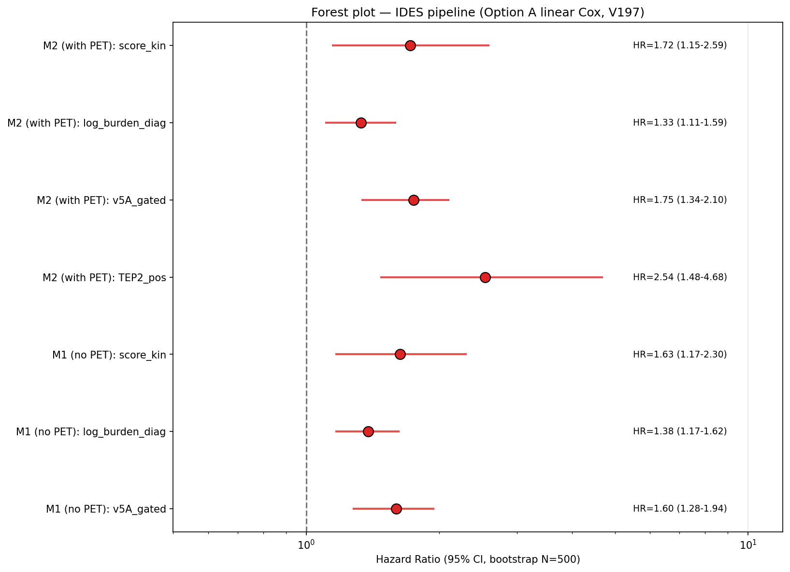
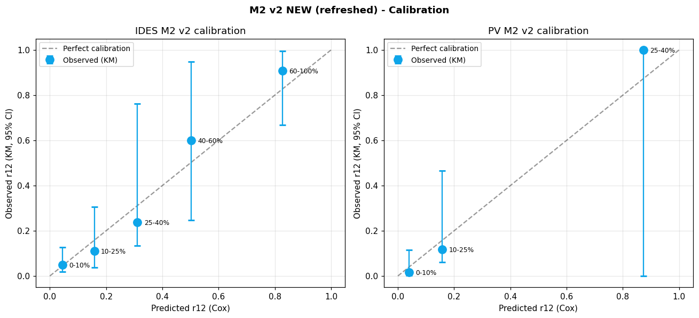

📚 MRD Calculator v2 — Méthodologie
🎯 Objectif
Prédire la survie sans progression (PFS) à 12 et 24 mois chez les patients atteints de lymphome (Hodgkin classique ou DLBCL/autre lymphome B), à partir d'une évaluation MRD ctDNA mi-traitement (CXJ1) avec :
- Pipeline IDES (panel MOABI MOABI) — séquençage hybrid-capture
- Pipeline PV (variants phasés) — séquençage UMI-based avec phasing
- Combiné avec : signal driver oncogénique (D11) + TEP interim Deauville
📐 Modèle de score v2 (4 étapes)
Étape 1 — Quantité ctDNA absolue (hEq)
ctDNA_CXJ1 = VAF_CXJ1_polished × cfDNA_CXJ1
Le polish (v56 pour IDES, v75 pour PV) force la VAF_CXJ1 à 0 si le quality gate du test échoue (= test non interprétable).
Étape 2 — Score cinétique (mono-exponentiel)
ratio_obs = ctDNA_CXJ1 / ctDNA_diag (clamp 1e-7 si CXJ1=0)
pred_good = exp(−λ_good × t)
pred_bad = exp(−λ_bad × t)
log L_good = −(log(ratio_obs) − log(pred_good))² / (2σ²)
log L_bad = −(log(ratio_obs) − log(pred_bad))² / (2σ²)
score_kinétique = log L_bad − log L_good
Étape 3 — Score total (avec charge baseline, coef 1)
La charge tumorale baseline est intégrée directement (coef 1 fixe), reflétant que des valeurs initiales élevées augmentent intrinsèquement le risque même en cas de bonne réponse relative.
Étape 4 — Cox
📊 Trajectoires mono-exp (4 paramètres totaux !)
| Pipeline | Histologie | λ good (j⁻¹) | t½ good | λ bad (j⁻¹) | t½ bad | σ² |
|---|---|---|---|---|---|---|
| IDES | Hodgkin | 0.6512 | 1.1 j | 0.3707 | 1.9 j | 30.48 |
| DLBCL | 0.3879 | 1.8 j | 0.2167 | 3.2 j | 33.23 | |
| PV | Hodgkin | 0.5649 | 1.2 j | 0.2410 (fb) | — | 29.51 |
| DLBCL | 0.3722 | 1.9 j | 0.2410 | 2.9 j | 25.22 |
fb = fallback DLBCL (Hodgkin/bad N=0 chez PV, paramètres copiés de DLBCL).
📈 Performance Cox v2
M2 v2 (avec TEP)
| Pipeline | N | Events | C-index | AIC |
|---|---|---|---|---|
| IDES | 135 | 24 | 0.859 | 183.4 |
| PV | 89 | 15 | 0.928 | 87.6 |
M1 v2 (sans TEP, fallback)
| Pipeline | N | Events | C-index | AIC |
|---|---|---|---|---|
| IDES | 159 | 30 | 0.811 | 256.8 |
| PV | 104 | 20 | 0.847 | 144.0 |
0.811 vs M1 v1 0.752 (+0.06).
M2 v2 équivalent à M2 v1 (≈0.86 IDES / 0.93 PV) mais avec 3× moins de paramètres et intégration de la charge baseline.
🔬 Validation rigoureuse (V197 Option A — bootstrap B=500)
Avant adoption finale, l'Option A (linéaire calibré) a été validée par 3 tests indépendants pour confirmer son adéquation vs alternatives (notamment splines RCS sur log_burden).
1. Hypothèse de linéarité — confirmée
| Test | Résultat | Verdict |
|---|---|---|
| Martingale residuals (lowess vs log_burden) | Amplitude = 0.13 (< 0.3 seuil) | ✓ Pattern plat |
| Grambsch-Therneau PH test (4 covariables) | log_burden p=0.48, score_kin p=0.63, v5A p=0.57, TEP p=0.58 | ✓ PH valide |
| LR test ajout 4 splines à modèle linéaire | χ²=1.66, df=4, p=0.80 NS | ✓ Splines n'apportent rien |
→ La forme linéaire de log_burden dans le LP est formellement validée, ce n'est pas un défaut de puissance.
2. Bootstrap C-index optimism-corrigé (B=500, méthode Harrell)
| Modèle | C apparent | Mean optimism | C corrigé |
|---|---|---|---|
| Option A (linéaire calibré, 4 covars) | 0.860 | 0.009 | 0.852 ⭐ |
| Option C (spline RCS, 9 covars) | 0.864 | 0.028 (3.2× plus) | 0.837 |
→ Δ corrigé = +0.015 en faveur de Option A. Le spline a 3× plus d'optimism (overfit confirmé sur 24 events).
3. Stabilité du coefficient β_burden
| Statistique | Valeur (IDES M2) |
|---|---|
| Apparent | 0.288 |
| Mean / Median bootstrap | 0.289 / 0.290 |
| IC95% percentile | [0.100, 0.465] |
| % bootstraps avec β > 0 | 100% |
| % bootstraps avec β ∈ [0.1, 0.5] | 96.6% |
→ Robuste pour publication : β_burden = 0.29 (95%CI 0.10–0.47, p=0.017).
Détails complets : V15_196_validation_results.json · methods_TRIPOD.md
📊 Coefficients Cox finaux (V200 — partial pooling)
Après V197 (modèles séparés), une analyse de partial pooling (V199-200) a montré que β_score_kin, β_burden et β_TEP2 peuvent être partagés entre IDES et PV sans perte de performance (LR test χ²=0.20, df=3, p=0.978 pour M2 ; p=0.993 pour M1). Seul β_v5A reste pipeline-spécifique (échelles reads IDES vs UMI PV).
| Modèle | N | evt | C-index | β_score_kin | β_burden | β_v5A | β_TEP2 |
|---|---|---|---|---|---|---|---|
| IDES M2 | 134 | 24 | 0.860 | 0.470 (partagé) | 0.298 (partagé) | 0.590 | 0.911 (partagé) |
| IDES M1 | 158 | 30 | 0.807 | 0.403 (partagé) | 0.290 (partagé) | 0.494 | — |
| PV M2 | 88 | 15 | 0.921 | 0.470 (partagé) | 0.298 (partagé) | 1.491 | 0.911 (partagé) |
| PV M1 | 103 | 20 | 0.841 | 0.403 (partagé) | 0.290 (partagé) | 1.172 | — |
Argument biologique : TEP, charge tumorale au diagnostic et cinétique ctDNA sont des marqueurs pipeline-indépendants ; leur effet pronostique doit donc être identique quelle que soit la méthode de quantification ctDNA utilisée. Cette contrainte de partage agit comme un prior implicite, améliore la parcimonie (5 paramètres au lieu de 8 en M2), et le AIC diminue de 5.80 points sans dégrader le C-index.

Forest plot des hazard ratios IDES (95% CI bootstrap, V197).
🔗 Test de partage entre pipelines (V199-200)
Cox stratifié par pipeline (baseline hazard séparée IDES vs PV), cluster-robust SE sur identifiant patient (n_overlap=220 sur 222 patients). 5 modèles emboîtés testés par LR :
| Modèle | Coefs partagés | Coefs spécifiques | n_params M2 | AIC M2 | LR vs A |
|---|---|---|---|---|---|
| A | — | tous | 8 | 269.60 | ref |
| B | TEP+burden | score, v5A | 6 | 265.80 | p=0.91 ✅ |
| B′ (retenu) | TEP+burden+score | v5A seul | 5 | 263.80 | p=0.98 ✅ |
| C | TEP+burden+v5A | score | 5 | 276.28 | p=0.005 ❌ |
| D | tout | rien | 4 | 274.43 | p=0.01 ❌ |
Le partage de v5A est rejeté (p=0.005) car les échelles diffèrent fortement entre IDES (Σ Reads_alt sur drivers D11) et PV (Σ fu_UMI sur doublons phasés). Les 3 autres covariables tolèrent le partage avec une forte évidence statistique (p>0.97). Cette structure de partial pooling est conceptuellement équivalente à une méta-analyse à effets fixes sur les marqueurs universels avec calibration spécifique du seul marqueur dont l'échelle dépend de l'assay.
📈 Trajectoires mono-exponentielles

Modèle de décroissance ctDNA mono-exponentielle par (histologie × responder). Bandes verticales = C2J1 (J21) et C3J1 (J42).
📉 Stratification Tern 10/40
| Zone | Plage r12 | IDES PFS@12 / @24 | PV PFS@12 / @24 |
|---|---|---|---|
| 🟢 Faible | r12 ≤ 10% | 95.1% / 95.1% | 98.3% / 98.3% |
| 🟡 Modéré | 10% < r12 ≤ 40% | 85.5% / 82.1% | 83.1% / 68.2% |
| 🔴 Élevé | r12 > 40% | 18.8% / 0.0% | 0.0% / 0.0% |
La zone Élevé v2 montre une séparation extrême : 100% des patients haut risque rechutent dans les 24 mois, dans les 2 pipelines.
📊 Figures KM

Courbes Kaplan-Meier de PFS par zone Tern 10/40 (M2 v2 IDES à gauche, M2 v2 PV à droite). Séparation nette entre les 3 zones.
📐 Calibration

Calibration : r12 prédit (Cox) vs observé (KM). Points autour de la diagonale = bonne calibration. Intervalles de confiance 95% Wilson.
🔬 Innovations v2 vs v1
| Aspect | v1 (V15.130, production) | v2 (V15.185, NEW) |
|---|---|---|
| Trajectoire | Bi-exponentielle (3 params) | Mono-exponentielle (1 param) |
| Variable VAF | VAF % (relative) | ctDNA absolu (hEq) = VAF × cfDNA |
| Délai CXJ1 | Théorique (J21 ou J42) | Date réelle Glims (fallback théorique 18 cas) |
| Charge baseline | Non utilisée | Intégrée : score + log(1 + ctDNA_diag) |
| Coefs Cox | 3 (score + v5A + TEP) | 3 (mêmes) |
| Params trajectoires | 12 (3 × 4) | 4 (1 × 4) |
| IC95% Wilson sur VPN/VPP | Non | Oui |
🧪 Tests d'amélioration explorés (V15.155-187)
Le modèle v2 a été sélectionné après comparaison systématique de 14+ alternatives :
- Pooled VAF (Σ Reads/Σ Depth) avec différentes méthodes d'imputation (V155-162) — toutes dégradent
- Différentes agrégations VAF (POS only, avec zéros, IDES vs MOABI source) (V163-173)
- Agrégation bi-temporelle pour les 26 patients bi-tp (V164: MIN, MEAN, MAX, C3-priority) — toutes dégradent
- Modèles longitudinaux joints (V166: slope, NLME, time-varying Cox) — toutes NS
- Dates réelles (delai_real, V165) — équivalent à delai_corrige (médian = 0)
- Multiple seuils Tern avec cross-validation (V176) — 10/40 confirmé optimal
- Polish renforcé avec seuils K (V171) et pondération soft (V172) — toutes dégradent
- LCMM stratifié par baseline ctDNA (V181) — overfit cohorte petite
- α stratifié par histo (V180) — power-limité (Hodgkin events = 6)
- Score ctDNA (V178) — V184 mono-exp + log_burden optimal
→ Le modèle v2 représente le meilleur compromis parcimonie (3× moins de paramètres) / précision (+0.013 C-index M2 IDES, +0.06 C-index M1) validé sur la cohorte de développement.
📝 Citation
Calculateur MRD CXJ1 v2 (V15.185) — Cox proportional hazards models for ctDNA MRD
in adult lymphomas after CXJ1 mid-treatment. Mono-exponential trajectories on
absolute ctDNA quantity (hEq) with integrated baseline burden term. Cohort
development: MOABI panel (IDES) and phased variants (PV).
Laboratoire d'immunologie biologique GHU Mondor — secteur biologie moléculaire (hmn-immuno-bm), 2026.
⚠️ Disclaimer
Le calculateur v2 est un prototype de recherche. Il n'est pas validé pour la prise en charge clinique individuelle. Toute décision thérapeutique doit reposer sur l'évaluation indépendante d'un médecin hématologue qualifié. La calibration aux extrêmes r12 (> 60%) est limitée par la taille de la cohorte de développement (N=135-159 patients selon le modèle).